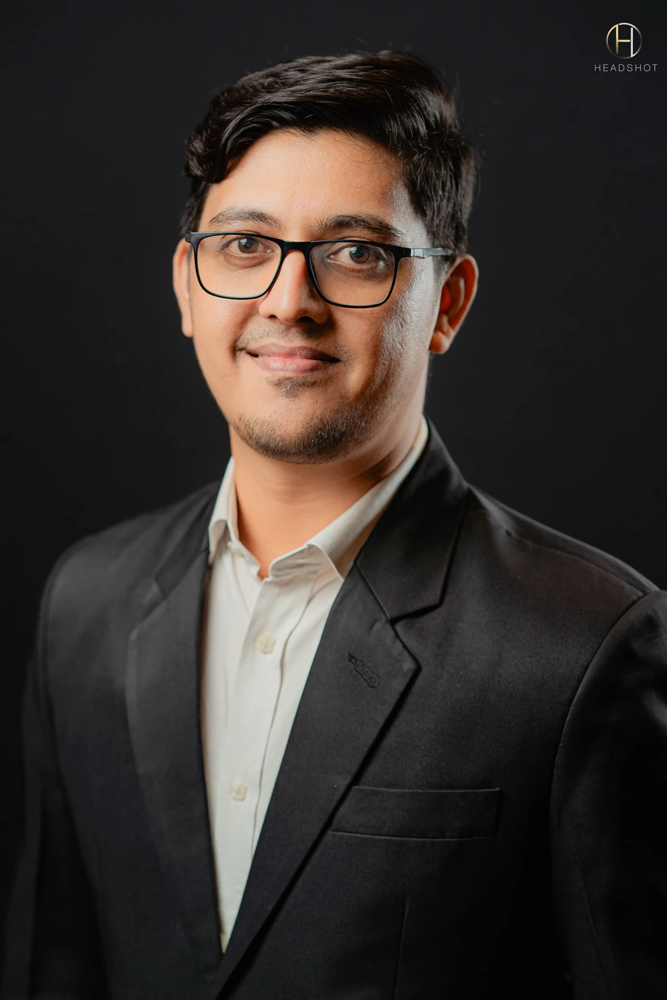
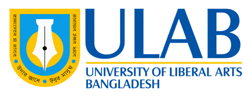
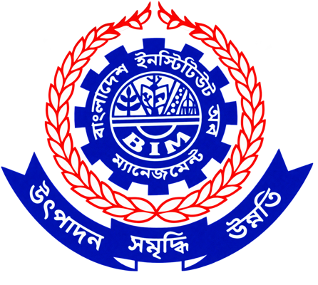

MBA · Strategic Management
University of Dhaka
ABOUT / THE PERSON BEHIND THE WORK
I have built my career across customer service, brand and digital marketing, product launches and sales operations in Bangladesh.

03 / ABOUT ME
I have built my career across brand, digital marketing, sales operations and customer service in Bangladesh. My experience combines creative communication with the coordination needed to make it work.
I currently lead brand and sales operations at Grameen Danone Foods Limited. Earlier roles at Care Nutrition and Aarong Dairy shaped my campaign, launch and digital experience; Banglalink built my foundation in customer service.
EXPERTISE AT A GLANCE
University of Dhaka

University of Liberal Arts Bangladesh

Bangladesh Institute of Management
MY CAREER / THE JOURNEY
A career built step by step, across customer service, brand communication, digital marketing and sales operations.
Current role first.
Brand and sales operations today, built on marketing and customer-service experience.

Jan 2024 – Present
Lead brand strategy, product development and sales operations through coordinated commercial execution.
Dec 2022 – Dec 2023
Managed brand and digital initiatives, supporting product launches, campaigns and go-to-market preparation.

Mar 2022 – Nov 2022
Led integrated marketing, product-launch coordination and the company website launch.

Jun 2018 – Mar 2022
Led integrated campaigns, video productions and the e-commerce and home-delivery launch.
Mar 2016 – May 2018
Supported national campaigns, product launches, agency coordination and digital brand communication.

May 2015 – Feb 2016
Resolved escalated cases and used recurring customer feedback to support service improvements.
Sep 2014 – Apr 2015
Coordinated a 15-member customer-care team, supporting service quality and day-to-day performance.
Mar 2013 – Aug 2014
Handled customer enquiries and complaints, building a foundation in service quality and customer insight.
Shown from my current role to my earliest position, with the latest role first within each organization. Role dates follow my LinkedIn profile.
CORE CAPABILITIES / SUPPORTED BY WORK
Strategy, brand storytelling and coordinated video production.
Explore campaign work ↗Positioning, portfolio development and go-to-market coordination.
Explore product launches ↗Website launches, e-commerce and connected customer services.
Explore digital projects ↗Sales operations, reporting and cross-functional execution.
Explore sales operations ↗Bangla — Native · English — Professional working proficiency · Hindi — Conversational
SELECTED PROFESSIONAL DEVELOPMENT
Selected training aligned with brand and sales operations leadership, based on my supplied training record.
Excellence Academy Bangladesh · 8 hours
Self-leadership, team effectiveness, trust and constructive conversations.
Excellence Academy Bangladesh · 8 hours
Strategic decision-making, cross-functional initiatives and stakeholder alignment.
Don Sumdany Facilitation and Consultancy · 16 hours
Leadership development.
Ostad · 4 months
No-code AI workflows, automation, prompt engineering, RAG and business applications.
Dhruv Rathee Academy · 3 hours
Practical AI tools for everyday work and productivity.
Don Sumdany Facilitation & Consultancy · 16 hours
Global digital marketing tools, techniques and concepts.
Facebook · 4 hours
Optimized Facebook content for effective campaign execution.
Geeky Social · 30 hours
Facebook marketing; related training review featured in Media.
Watch my training review ↗